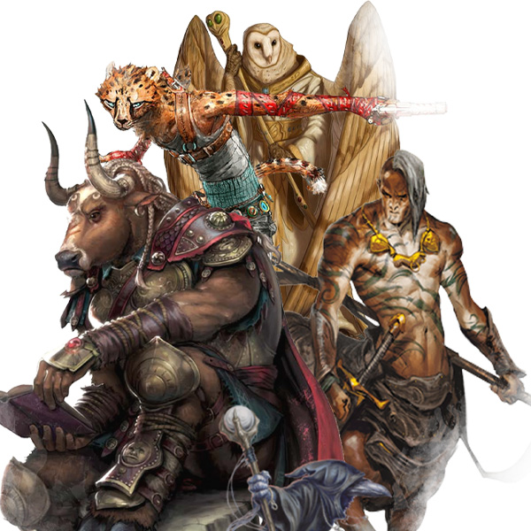

Animalistic Races
In Celestia, races such as Aarakocra, Lizardfolk, Owlin, Tabaxi, Tortle, Loxodon, and others, who are considered more "animalistic" in nature, are not treated differently from other races. Due to the strong association with nature and the natural world, influenced by deities such as Elara, Auriel, and Raijin, there is a deep respect for all creatures of nature in Celestia, as long as they are not perceived as tainted by arcane magic.
These races are accepted and respected in Celestia, and their unique characteristics and abilities are recognized and appreciated. They are not subjected to discrimination or mistreatment based on their physical appearances or innate abilities. Their connection with nature is seen as a positive aspect, and they are often viewed as valuable members of society, contributing in various ways to the prosperity and well-being of Celestia.
This contrasting treatment of different races in Celestia reflects the complex dynamics of societal norms and beliefs within the realm. While tieflings, dragons, and dragonborn face discrimination and prejudice due to their perceived association with arcane magic, other races with more naturalistic traits are embraced and respected. This further highlights the diverse cultural and societal aspects within Celestia, shaped by its history, beliefs, and influences of deities and powerful entities.
